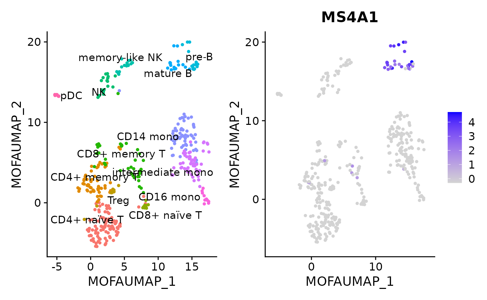
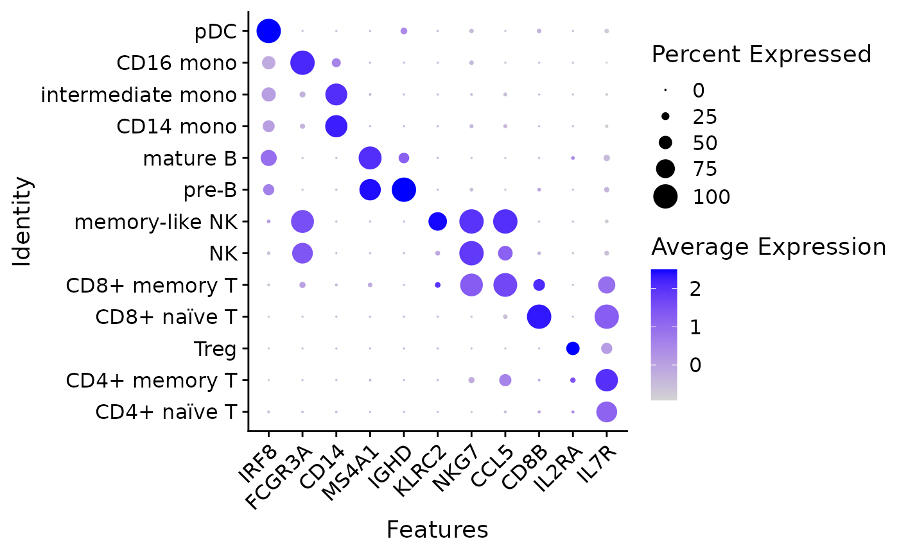

CITE-seq data with MuData and Seurat
Danila Bredikhin
European Molecular Biology Laboratory, Heidelberg, Germanydanila.bredikhin@embl.de
Ilia Kats
German Cancer Research Center, Heidelberg, Germanyi.kats@dkfz-heidelberg.de
2022-02-08
PBMC-CITE-seq.RmdIntroduction
CITE-seq data provide RNA and surface protein counts for the same cells. There are different workflows to analyse these data in R such as with Seurat or with CiteFuse. This tutorial shows how such data stored in MuData (H5MU) files can be read and integrated with Seurat-based workflows.
Loading data
For this tutorial, we will use a subset of cells and features from the output of the CITE-seq integration in muon.
This example dataset can be downloaded as a file in the H5MU format, which is then deserialised to create a Seurat object:
# Download file into a temporary directory
fdir <- tempdir()
mdata_path <- file.path(fdir, "minipbcite.h5mu")
download.file(url="https://github.com/gtca/h5xx-datasets/blob/main/datasets/minipbcite.h5mu?raw=true", destfile=mdata_path, mode="wb")
pbmc <- ReadH5MU(mdata_path)
#> Warning in missing_on_read("/var", "global variables metadata"): Missing on
#> read: /var. Seurat does not support global variables metadata.
#> Warning: Feature names cannot have underscores ('_'), replacing with dashes
#> ('-')
#> Warning in missing_on_read("/varp", "pairwise annotation of variables"): Missing
#> on read: /varp. Seurat does not support pairwise annotation of variables.
#> Warning: Feature names cannot have underscores ('_'), replacing with dashes
#> ('-')
#> Warning: No columnames present in cell embeddings, setting to 'MOFA_1:30'
#> Warning: Keys should be one or more alphanumeric characters followed by an
#> underscore, setting key from MOFA_UMAP_ to MOFAUMAP_
#> Warning: All keys should be one or more alphanumeric characters followed by an
#> underscore '_', setting key to MOFAUMAP_
#> Warning: No columnames present in cell embeddings, setting to 'MOFAUMAP_1:2'
#> Warning: No columnames present in cell embeddings, setting to 'UMAP_1:2'
#> Warning: Keys should be one or more alphanumeric characters followed by an
#> underscore, setting key from WNN_UMAP_ to WNNUMAP_
#> Warning: All keys should be one or more alphanumeric characters followed by an
#> underscore '_', setting key to WNNUMAP_
#> Warning: No columnames present in cell embeddings, setting to 'WNNUMAP_1:2'
#> Warning: No columnames present in cell embeddings, setting to 'protpca_1:31'
#> Warning: No columnames present in cell embeddings, setting to 'protumap_1:2'
#> Warning: No columnames present in cell embeddings, setting to 'rnapca_1:50'
#> Warning: No columnames present in cell embeddings, setting to 'rnaumap_1:2'
pbmc
#> An object of class Seurat
#> 56 features across 411 samples within 2 assays
#> Active assay: prot (29 features, 29 variable features)
#> 1 other assay present: rna
#> 8 dimensional reductions calculated: MOFA, MOFA_UMAP, UMAP, WNN_UMAP, protpca, protumap, rnapca, rnaumapHere, pbmc is a full-featured Seurat object that can be used in downstream analysis workflows.
Visualising data
Importantly, data can now be plotted with Seurat.
Markers
Cells can be coloured by expression level and plotted in a selected latent space:
DefaultAssay(pbmc) <- "rna"
DimPlot(pbmc, reduction = "MOFA_UMAP", label = TRUE, repel = TRUE) + NoLegend() +
FeaturePlot(pbmc, features = "MS4A1", reduction = "MOFA_UMAP")
RNA expression in different celltypes (genes in the subset were pre-selected to be celltype markers):
rna_features <- c("IRF8", "FCGR3A", "CD14", "MS4A1", "IGHD",
"KLRC2", "NKG7", "CCL5", "CD8B", "IL2RA", "IL7R")
DotPlot(pbmc, features = rna_features) + RotatedAxis()
Naïve/memory T cell surface protein expression:
DefaultAssay(pbmc) <- "prot"
prot_features <- c("CD3-TotalSeqB", "CD45RA-TotalSeqB", "CD45RO-TotalSeqB")
t_cells <- c("CD4+ naïve T", "CD4+ memory T", "Treg",
"CD8+ naïve T", "CD8+ memory T")
VlnPlot(pbmc[,pbmc@meta.data$celltype %in% t_cells],
features = prot_features, ncol = 3)Downstream analysis
Since pbmc is a Seurat object, we can use corresponding processing and analysis functions. To provide an example, we will re-calculate cell neighbourhoods using the previously computed (on the full dataset) MOFA factors and then compute a non-linear embedding of cells.
pbmc <- FindNeighbors(pbmc, reduction = "MOFA", dims = 1:30)
#> Computing nearest neighbor graph
#> Computing SNN
pbmc <- RunUMAP(pbmc, reduction = "MOFA", dims = 1:30, reduction.key = "rUMAP_", reduction.name = "rUMAP")
#> Warning: The default method for RunUMAP has changed from calling Python UMAP via reticulate to the R-native UWOT using the cosine metric
#> To use Python UMAP via reticulate, set umap.method to 'umap-learn' and metric to 'correlation'
#> This message will be shown once per session
#> 13:26:23 UMAP embedding parameters a = 0.9922 b = 1.112
#> 13:26:23 Read 411 rows and found 30 numeric columns
#> 13:26:23 Using Annoy for neighbor search, n_neighbors = 30
#> 13:26:23 Building Annoy index with metric = cosine, n_trees = 50
#> 0% 10 20 30 40 50 60 70 80 90 100%
#> [----|----|----|----|----|----|----|----|----|----|
#> **************************************************|
#> 13:26:23 Writing NN index file to temp file /tmp/RtmpXwOpwD/file3be5609d5cb
#> 13:26:23 Searching Annoy index using 1 thread, search_k = 3000
#> 13:26:23 Annoy recall = 100%
#> 13:26:23 Commencing smooth kNN distance calibration using 1 thread
#> 13:26:24 Initializing from normalized Laplacian + noise
#> 13:26:24 Commencing optimization for 500 epochs, with 13582 positive edges
#> 13:26:25 Optimization finished
DimPlot(pbmc, reduction = "rUMAP")References
mudata (Python) documentation
muon documentation and tutorials
Session Info
sessionInfo()
#> R version 4.1.2 (2021-11-01)
#> Platform: x86_64-pc-linux-gnu (64-bit)
#> Running under: Ubuntu 20.04.3 LTS
#>
#> Matrix products: default
#> BLAS: /usr/lib/x86_64-linux-gnu/blas/libblas.so.3.9.0
#> LAPACK: /usr/lib/x86_64-linux-gnu/lapack/liblapack.so.3.9.0
#>
#> locale:
#> [1] LC_CTYPE=C.UTF-8 LC_NUMERIC=C LC_TIME=C.UTF-8
#> [4] LC_COLLATE=C.UTF-8 LC_MONETARY=C.UTF-8 LC_MESSAGES=C.UTF-8
#> [7] LC_PAPER=C.UTF-8 LC_NAME=C LC_ADDRESS=C
#> [10] LC_TELEPHONE=C LC_MEASUREMENT=C.UTF-8 LC_IDENTIFICATION=C
#>
#> attached base packages:
#> [1] stats graphics grDevices utils datasets methods base
#>
#> other attached packages:
#> [1] SeuratObject_4.0.4 Seurat_4.1.0 MuDataSeurat_0.0.0.9000
#> [4] BiocStyle_2.22.0
#>
#> loaded via a namespace (and not attached):
#> [1] Rtsne_0.15 colorspace_2.0-2 deldir_1.0-6
#> [4] ellipsis_0.3.2 ggridges_0.5.3 rprojroot_2.0.2
#> [7] fs_1.5.2 spatstat.data_2.1-2 farver_2.1.0
#> [10] leiden_0.3.9 listenv_0.8.0 bit64_4.0.5
#> [13] ggrepel_0.9.1 RSpectra_0.16-0 fansi_1.0.2
#> [16] codetools_0.2-18 splines_4.1.2 cachem_1.0.6
#> [19] knitr_1.37 polyclip_1.10-0 jsonlite_1.7.3
#> [22] ica_1.0-2 cluster_2.1.2 png_0.1-7
#> [25] uwot_0.1.11 spatstat.sparse_2.1-0 shiny_1.7.1
#> [28] sctransform_0.3.3 BiocManager_1.30.16 compiler_4.1.2
#> [31] httr_1.4.2 Matrix_1.4-0 fastmap_1.1.0
#> [34] lazyeval_0.2.2 cli_3.1.1 later_1.3.0
#> [37] htmltools_0.5.2 tools_4.1.2 igraph_1.2.11
#> [40] gtable_0.3.0 glue_1.6.1 RANN_2.6.1
#> [43] reshape2_1.4.4 dplyr_1.0.8 Rcpp_1.0.8
#> [46] scattermore_0.7 jquerylib_0.1.4 pkgdown_2.0.2
#> [49] vctrs_0.3.8 nlme_3.1-155 lmtest_0.9-39
#> [52] xfun_0.29 stringr_1.4.0 globals_0.14.0
#> [55] mime_0.12 miniUI_0.1.1.1 lifecycle_1.0.1
#> [58] irlba_2.3.5 goftest_1.2-3 future_1.23.0
#> [61] MASS_7.3-55 zoo_1.8-9 scales_1.1.1
#> [64] spatstat.core_2.3-2 ragg_1.2.1 promises_1.2.0.1
#> [67] spatstat.utils_2.3-0 parallel_4.1.2 RColorBrewer_1.1-2
#> [70] yaml_2.2.2 memoise_2.0.1 reticulate_1.24
#> [73] pbapply_1.5-0 gridExtra_2.3 ggplot2_3.3.5
#> [76] sass_0.4.0 rpart_4.1.16 stringi_1.7.6
#> [79] highr_0.9 desc_1.4.0 rlang_1.0.1
#> [82] pkgconfig_2.0.3 systemfonts_1.0.3 matrixStats_0.61.0
#> [85] evaluate_0.14 lattice_0.20-45 tensor_1.5
#> [88] ROCR_1.0-11 purrr_0.3.4 labeling_0.4.2
#> [91] patchwork_1.1.1 htmlwidgets_1.5.4 bit_4.0.4
#> [94] cowplot_1.1.1 tidyselect_1.1.1 parallelly_1.30.0
#> [97] RcppAnnoy_0.0.19 plyr_1.8.6 magrittr_2.0.2
#> [100] bookdown_0.24 R6_2.5.1 generics_0.1.2
#> [103] withr_2.4.3 mgcv_1.8-38 pillar_1.7.0
#> [106] fitdistrplus_1.1-6 abind_1.4-5 survival_3.2-13
#> [109] tibble_3.1.6 future.apply_1.8.1 hdf5r_1.3.5
#> [112] crayon_1.4.2 KernSmooth_2.23-20 utf8_1.2.2
#> [115] spatstat.geom_2.3-1 plotly_4.10.0 rmarkdown_2.11
#> [118] grid_4.1.2 data.table_1.14.2 digest_0.6.29
#> [121] xtable_1.8-4 tidyr_1.2.0 httpuv_1.6.5
#> [124] textshaping_0.3.6 munsell_0.5.0 viridisLite_0.4.0
#> [127] bslib_0.3.1